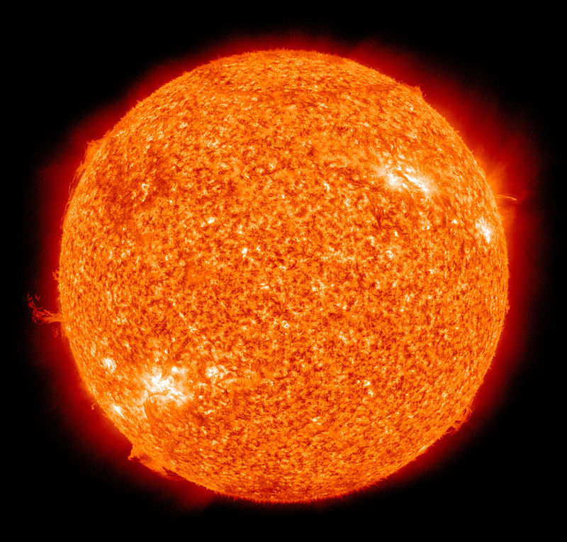

Prezentare generala
Soarele este steaua aflata in centrul Sistemului nostru Solar. Masa totala a Pamantului, a tuturor celorlalte planete, asteroizi, meteoroizi, comete precum si a prafului interplanetar care orbiteaza in jurul Soarelui, reprezinta abia 0,14% din masa intregului Sistem Solar, in timp ce masa Soarelui reprezinta 99,86%. Energia provenita de la Soare (sub forma luminii, caldurii s.a.) face posibila intreaga viata de pe Pamant, de exemplu prin fotosinteza, iar prin intermediul caldurii si clima favorabila.
In cadrul discutiilor dintre cercetatori, Soarele este desemnat uneori si prin numele sau latin Sol, sau grecesc Helios. Unele popoare din Antichitate il considerau ca fiind o planeta.
Hidrogenul reprezinta aproximativ 74% din masa Soarelui, heliul 25%, iar restul este constituit din cantitati mici de elemente mai grele. Datorita acestei compozitii si a temperaturilor ridicate, pe Soare nu exista o crusta (scoarta) solida, si nici materie in stare lichida, toata materia solara fiind in intregime in stare de plasma si gazoasa.
Soarele face parte din clasa spectrala G2V. "G2" inseamna ca:
• temperatura la suprafata este de aproximativ 5778 K (5505 °C, 9941 °F);
• iar spectrul sau contine linii de metale ionizate si neutre precum si foarte slabe linii de hidrogen.
Sufixul "V" (citit 5) indica apartenenta Soarelui la grupul majoritar al stelelor aflate in secventa principala. Aceasta inseamna ca isi genereaza energia prin fuziunea nucleara a nucleelor de hidrogen in heliu, si ca se afla in echilibru hidrostatic, adica nici nu se contracta nici nu se dilata. Numai in galaxia noatra sunt mai mult de 100 de milioane de stele din clasa G2. Datorita distributiei logaritmice a marimii stelelor, Soarele este de fapt mai stralucitor decat 85% din stelele galaxiei, majoritatea acestora fiind pitice rosii.